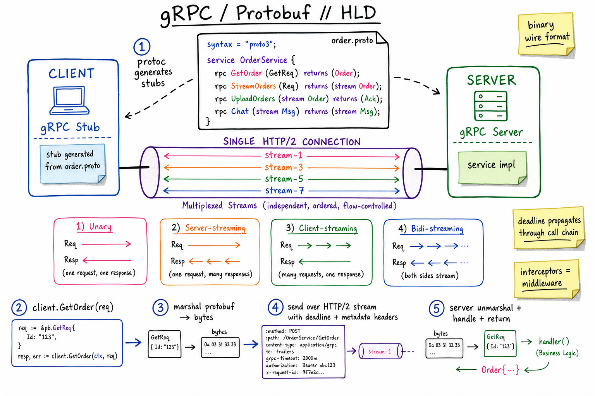
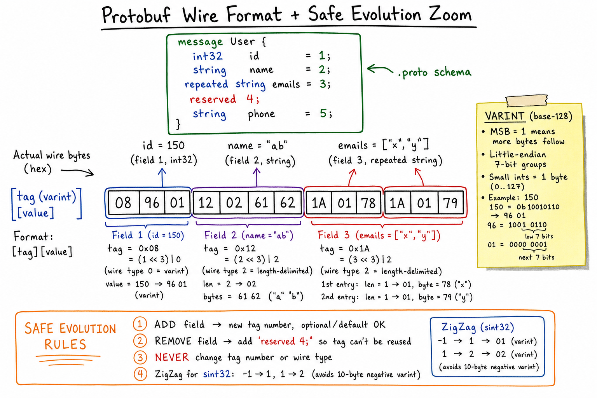

gRPC / Protobuf // Deep Dive
High-performance binary RPC over HTTP/2 with code-generated stubs from .proto schemas. Four streaming modes, deadline propagation, native multiplexing. The default internal-service-to-service protocol at Google, Netflix, Square, and beyond.

.proto defines the service; protoc generates client & server stubs in 10+ languages. A single HTTP/2 connection carries many independent streams (one per call), with binary framing, deadlines, and metadata.
01 — Identity
gRPC (open-sourced by Google in 2015) is an RPC framework: you declare services + messages in .proto, run protoc to generate strongly-typed stubs, and call methods that look local but run over the network. The wire protocol is Protocol Buffers (Protobuf) over HTTP/2.
It replaces the “build your own JSON-over-HTTP REST API + handwritten clients per language” pattern with a single source of truth (the .proto) and predictable, fast, type-safe wire transport.
Where it sits: internal service-to-service RPC, especially in polyglot environments. For browser-facing or partner-facing APIs, REST or GraphQL still dominate (gRPC needs HTTP/2 trailers, which browsers expose only through gRPC-Web).
01a — Core Concepts
| Term | Meaning |
|---|---|
| proto3 | Current Protobuf language version. Removes required, all fields default-valued unless optional. |
| service | RPC interface in .proto; contains rpc Method(Req) returns (Resp) declarations. |
| message | A struct of fields, each with name, type, and tag number (the wire identifier). |
| field tag | Small integer (1–536870911). Identity of the field on the wire — never change, never reuse. |
| oneof | Union: at most one of the named fields is set. Like a tagged variant. |
| repeated | List of values of the same type. Same tag, repeated entries. |
| map<K,V> | Syntactic sugar for repeated MapEntry { K key=1; V value=2; }. |
| Unary / Server-stream / Client-stream / Bidi | The 4 RPC kinds. Differ only in stream on req / resp side of the proto. |
| Deadline | Absolute timestamp at which the call should be cancelled. Propagated across hops. |
| Metadata | HTTP/2 header pairs (auth tokens, request id, locale). Sent at start; optionally trailers at end. |
| Interceptor | Middleware on client or server (auth, logging, retries, tracing). |
| Reflection | Optional server endpoint that exposes its .proto so tools (grpcurl) can call without compiled stubs. |
01b — API / Wire Surface
The .proto
syntax = "proto3";
package shop.v1;
option go_package = "github.com/you/shop/v1;shopv1";
service OrderService {
rpc GetOrder (GetOrderReq) returns (Order);
rpc StreamOrders (StreamReq) returns (stream Order); // server-stream
rpc UploadOrders (stream Order) returns (UploadAck); // client-stream
rpc Chat (stream ChatMsg) returns (stream ChatMsg); // bidi-stream
}
message Order {
string id = 1;
string user_id = 2;
double total = 3;
repeated string tags = 4;
oneof contact {
string email = 5;
string phone = 6;
}
reserved 7; // do not reuse this tag
reserved "old_status"; // do not reuse this name
}
Generated client call (Go)
conn, _ := grpc.NewClient("orders.svc:9000",
grpc.WithTransportCredentials(creds),
grpc.WithUnaryInterceptor(retryInterceptor),
)
client := shopv1.NewOrderServiceClient(conn)
ctx, cancel := context.WithTimeout(parentCtx, 2*time.Second)
defer cancel()
ctx = metadata.AppendToOutgoingContext(ctx, "x-request-id", reqID)
order, err := client.GetOrder(ctx, &shopv1.GetOrderReq{Id: "42"})
Server-stream
stream, _ := client.StreamOrders(ctx, &shopv1.StreamReq{Since: ts})
for {
o, err := stream.Recv()
if err == io.EOF { break }
if err != nil { return err }
handle(o)
}
The non-obvious contract: HTTP/2 trailers carry the gRPC status. Body bytes come in DATA frames;grpc-statusandgrpc-messagearrive in the trailing HEADERS frame after the body. This is exactly the bit browsers can’t read directly — the reason gRPC-Web exists.
02 — When to Use / When NOT to Use
| Use when… | Don’t use when… |
|---|---|
| Internal RPC between services owned by you (any language). | Public / third-party API consumed by random clients — REST + JSON is universal. |
| High call volume; latency & CPU matter. | You need direct browser access without a proxy — only gRPC-Web is browser-native, no client streaming. |
| Streaming RPCs (telemetry, chat, server push). | Human-debuggable wire on the path — binary needs grpcurl / reflection. |
| Polyglot team needs a single source of truth. | You want hypermedia / cacheable GETs — HTTP semantics aren’t native here. |
| You want strong, evolvable schemas without writing client SDKs per language. | Schema discipline is weak — tag-number changes break everyone silently. |
03 — Architecture
Stack
+------------------------------+ +------------------------------+ | Application | | Application | | (your handlers / methods) | | (your generated stubs) | +------------------------------+ +------------------------------+ | gRPC runtime | | gRPC runtime | | - codecs (protobuf, JSON) | | - codecs (protobuf, JSON) | | - interceptors | | - interceptors | | - status, deadlines | | - status, deadlines | +------------------------------+ +------------------------------+ | HTTP/2 |<---->| HTTP/2 | | - streams (independent) | | - streams | | - HPACK header compression | | | | - flow control | | | +------------------------------+ +------------------------------+ | TLS / TCP | | TLS / TCP | +------------------------------+ +------------------------------+
HTTP/2 multiplexing
A single TCP connection carries many streams. Each gRPC call = one HTTP/2 stream. Streams are independent: a slow stream doesn’t block others (no head-of-line blocking within the connection — though TCP HoL still applies at the transport layer, which is why HTTP/3 / QUIC is the next step).
The wire layout of one call
HEADERS frame (initial): :method POST, :path /shop.v1.OrderService/GetOrder
content-type application/grpc, te trailers,
grpc-timeout 2000m, authorization Bearer ...
DATA frame(s): [1B compressed flag][4B length][protobuf bytes]
(repeated, possibly many for streaming)
HEADERS frame (trailing): grpc-status 0, grpc-message ok
04 — The Four Streaming Modes
| Mode | Proto shape | When to use |
|---|---|---|
| Unary | rpc M(Req) returns (Resp); | The 90% case. Request — response. |
| Server-streaming | rpc M(Req) returns (stream Resp); | Server pushes many over time: live updates, large result feed, server-sent telemetry. Replaces long-polling and often SSE. |
| Client-streaming | rpc M(stream Req) returns (Resp); | Client uploads many: log shipping, file chunks, bulk insert — one final summary back. |
| Bidirectional | rpc M(stream Req) returns (stream Resp); | Chat, control plane, interactive sessions, two-way audio/video signalling. |
Within one stream, messages are ordered and back-pressured by HTTP/2 flow control. Independent streams on the same connection make progress concurrently — you don’t need a connection pool just for parallelism (as with HTTP/1.1).
05 — Schema Evolution Rules
Tag numbers are the wire-level identity of fields. Get these rules wrong and clients silently misinterpret data.
What’s safe
- Add a new field with a new tag number, default value, optional in proto3. Old clients ignore unknown tags; new clients see default when reading old data.
- Remove a field — but immediately add
reserved <tag>;andreserved "<name>";so no one can reuse them. - Rename a field (just the name; the tag stays the same).
- Add new
oneofcases — old clients see “none”. - Promote a single field to
repeatedfor some types where the wire encoding is compatible (with caveats — packed vs unpacked).
What breaks the wire
- Change a tag number.
- Reuse a removed tag for a different field.
- Change a field’s type across wire-type categories (int32 → string).
- Swap
int32andsint32: same wire type (varint) but different encoding of negatives. - Wrap an existing field in
oneofwith other fields you reuse: now setting one clears the other.

Protobuf wire format: a sequence of [tag][value] pairs. Tag = (field_number << 3) | wire_type. Varints use base-128, MSB = “more bytes follow”. Unknown tags are skipped — that’s the foundation of safe evolution.
06 — Protobuf Wire Format
Encoding rules
- A message is just a flat sequence of
(tag, value)records. No length prefix, no terminator (size is known from the surrounding frame). - Tag byte =
(field_number << 3) | wire_type. So field 1 with wire_type 0 (varint) is0x08. - Wire types: 0 = varint (int32/64, bool, enum); 1 = 64-bit fixed; 2 = length-delimited (string, bytes, embedded message, packed repeated); 5 = 32-bit fixed.
- Varint: little-endian groups of 7 bits with MSB=“more bytes”.
150→96 01. Small ints take 1 byte; ints up to 268M take <= 4 bytes. - ZigZag: for
sint32 / sint64, encode(n << 1) ^ (n >> 31)so small negatives don’t become 10-byte varints.-1→1;1→2;-2→3.
Why parsing is cheap
The parser is a tight loop: read tag, switch on wire_type, read value, store in struct slot, repeat. Unknown tags are skipped by length / wire-type alone — you don’t need to know what the field means. That’s why forward compatibility works.
JSON vs Protobuf size
JSON: {"id":150,"name":"ab","emails":["x","y"]} → 39 bytes
Protobuf: 08 96 01 12 02 61 62 1A 01 78 1A 01 79 → 13 bytes
Add gzip and the gap narrows, but Protobuf still wins because there are no field names on the wire and integers are tight.
07 — Deadlines & Cancellation
Every gRPC call carries a deadline — an absolute time after which the result is no longer wanted. The runtime turns it into the grpc-timeout HTTP/2 header and propagates it.
// gateway ctx, _ := context.WithTimeout(req.Context(), 1*time.Second) // gateway calls inventory service resp, _ := inventory.Reserve(ctx, ...) // inherits 1s, less RTT // inventory calls pricing resp2, _ := pricing.Get(ctx, ...) // inherits whatever remains
If the gateway’s deadline elapses, the cancellation signal cascades: every downstream call observes ctx.Done() and returns DEADLINE_EXCEEDED. No more “orphan” requests churning on dead users’ behalf.
Set deadlines at the edge; never let a user-facing service make a deadline-less call to a downstream — that’s how cascading slowness becomes a cascading outage.
08 — Error Model
gRPC has a fixed set of status codes (~16) returned in HTTP/2 trailers. Map your error to one of these; pile arbitrary detail into a google.rpc.Status message containing details (typed protos).
| Code | Use when |
|---|---|
OK (0) | Success. |
INVALID_ARGUMENT (3) | Bad input that the client can fix. Like 400. |
NOT_FOUND (5) | Resource doesn’t exist. Like 404. |
ALREADY_EXISTS (6) | Conflict on create. Idempotency-friendly. |
PERMISSION_DENIED (7) | Authenticated but not allowed. |
UNAUTHENTICATED (16) | No / bad credentials. Like 401. |
RESOURCE_EXHAUSTED (8) | Quota / rate-limit hit. |
FAILED_PRECONDITION (9) | State invariant violated. Don’t retry blindly. |
ABORTED (10) | Optimistic concurrency / TX conflict. Retryable. |
OUT_OF_RANGE (11) | Pagination past end, seek past EOF. |
UNIMPLEMENTED (12) | Method not supported. Useful during evolution. |
UNAVAILABLE (14) | Transient backend issue. Retryable with backoff. |
DEADLINE_EXCEEDED (4) | The deadline ran out. Don’t retry without raising the budget. |
Retry budget should target only UNAVAILABLE and ABORTED. Idempotency must be guaranteed by the caller (typically with an idempotency key).
09 — gRPC vs REST + JSON
| gRPC | REST + JSON | |
|---|---|---|
| Wire | Binary Protobuf, HTTP/2 framing | UTF-8 JSON, HTTP/1.1 or 2 |
| Schema | Strongly typed (.proto), generated stubs | Optional OpenAPI / JSON Schema, often hand-rolled clients |
| Performance | ~5–10× faster CPU, ~3× smaller payload | Slower, larger |
| Streaming | Native, 4 modes | SSE / chunked transfer; no native client streaming |
| Browser | Needs gRPC-Web proxy | Native |
| Caching | None native | HTTP cache (ETag, Cache-Control) |
| Debuggability | grpcurl / reflection | curl / browser |
| Mesh / observability | First-class in Envoy, Linkerd, Istio | Same support, but richer cache integration |
| Best for | Internal RPC, polyglot, high throughput | Public APIs, browser clients, hypermedia |
10 — gRPC-Web & Service Mesh
gRPC-Web
Browsers can’t read HTTP/2 trailers from fetch. gRPC-Web is a wire-compatible variant that folds trailers into the body as a final framed chunk. Limitations:
- Only unary and server-streaming. No client streaming.
- Needs a proxy (Envoy filter, gRPC-Web proxy) that translates to native gRPC for the backend.
- Payload still binary by default; can fall back to JSON-encoded gRPC for debugging.
Service mesh interop
Envoy and Linkerd understand gRPC natively: per-method routing, per-status retries, latency histograms keyed by method. Adding gRPC services into Istio is usually zero-config — the mesh terminates mTLS, observes traces from HTTP/2 headers, and load-balances at the request level (not connection level).
11 — Load Balancing
The defining gotcha: HTTP/2 multiplexes many requests on one connection. A naive L4 load balancer that picks a backend at connection time will pin every subsequent call from that client to the same backend — one backend gets hot, others idle.
Two correct approaches
- Client-side LB — client resolves backend list (DNS / xDS / Consul), opens a connection to each, and round-robins or least-loaded across them per call. gRPC’s built-in
round_robinpolicy. Best for service-to-service. - L7 proxy LB (Envoy, Linkerd, NGINX) — proxy terminates HTTP/2, makes per-RPC routing decisions, re-opens to backends with its own pool. Best when many short-lived clients can’t do their own discovery.
Keepalive
gRPC opens a few long-lived connections; LBs and middleboxes love to kill idle ones. Tune keepalive_time (default 10s on server, off on client) & keepalive_timeout so half-open connections are detected before the next call sees an unexpected RST.
12 — Usage Patterns (back to A cheatsheets)
gRPC is the implicit transport for the “internal microservice calls” box in nearly every HLD. Concretely:
- Uber — trip lifecycle service mesh; bidi streams for driver location.
- Notification System — gateway → channel adapters via unary RPC with deadlines.
- Payment System — intercepts for auth + idempotency-key handling; ABORTED for optimistic-locking retries.
- Ad Click Aggregator — client-stream upload from edge collectors to ingest service.
- Internal control-plane APIs (Kubernetes uses gRPC for nearly everything between kubelet, CRI, CSI, CNI).
13 — Alternatives
| Alternative | When to pick |
|---|---|
| REST + JSON | Public API, browsers, partners, easy debugging. Slower wire, weak schema. |
| GraphQL | Client-shaped queries against a graph of resources. Great for varied UIs over the same data; not an RPC framework. |
| Apache Thrift | Older Facebook equivalent. Still seen at Meta / Pinterest. Comparable design, smaller community. |
| Cap’n Proto / FlatBuffers | Zero-copy reads. Cap’n Proto for RPC, FlatBuffers for game-engine-style messages. Niche; very fast. |
| MessagePack / CBOR | Binary JSON-ish formats. No schema; better as a payload than as a full RPC framework. |
| OpenAPI + REST | Schema-first REST. Gets you gRPC-like client generation while keeping HTTP semantics. |
| tRPC | TypeScript-only, schema-from-code, no codegen. Brilliant inside a single TS monorepo; not polyglot. |
| Connect (Buf) | gRPC’s wire protocol + a JSON variant + native browser support without a proxy. Drop-in modern alternative. |
14 — Interview Q&A
Why gRPC over REST inside a system?
Three reasons: (1) schema-driven — one .proto generates type-safe stubs in every language, eliminating drift between services. (2) HTTP/2 + binary protobuf — smaller payloads, lower CPU, native streaming + multiplexing on one connection. (3) deadline + cancellation propagation built into the runtime. The trade-off is debuggability and browser reach — that’s where REST or GraphQL still win.
What are the 4 streaming modes and when do you use each?
Unary: req/resp — 90% of calls. Server-streaming: server pushes many over time (live feed, large query result, telemetry). Client-streaming: client uploads many, server replies once (log shipping, bulk insert, chunked upload). Bidirectional: both sides stream independently (chat, interactive control plane, signalling). They differ only by adding stream to the proto.
How does HTTP/2 multiplexing differ from HTTP/1.1 pipelining?
HTTP/1.1 pipelining required responses to come back in request order, so one slow response blocked all behind it (HoL). HTTP/2 streams are independent: each call has its own stream id, frames are interleaved, and a slow stream doesn’t hold up others on the same connection. TCP HoL still applies at the transport layer — QUIC / HTTP/3 fixes that too.
Walk me through the protobuf wire encoding of a small message.
A message is a flat sequence of [tag][value] records. Tag byte = (field_number << 3) | wire_type. For {id=150, name="ab"}: 08 (tag for field 1, varint) 96 01 (150 as varint), 12 (tag for field 2, length-delimited) 02 (length) 61 62 (“ab”). Total 7 bytes vs ~16 JSON-bytes. Unknown tags are skipped by wire_type / length without knowing the field meaning — that’s why forward compatibility works.
What schema changes are safe and which break the wire?
Safe: add a new field (new tag, optional / default), remove a field (immediately reserved the tag & name), rename a field (tag stays). Breaks: change a tag number, reuse a removed tag for a different field, change a field’s wire-type category (int → string), swap int32 and sint32 (same wire-type, different negative encoding). The discipline is: tag numbers are forever.
How do deadlines propagate?
The client puts an absolute deadline on the call (grpc-timeout header). Server runtime puts that into the request context. When the server makes downstream calls passing that context, the runtime computes the remaining budget and stamps it on the new outgoing header. If the outer deadline elapses, every in-flight downstream sees its context cancelled and returns DEADLINE_EXCEEDED — no orphaned work.
Why is gRPC load balancing hard with a naive L4 LB?
gRPC keeps long-lived HTTP/2 connections and multiplexes many calls on each. An L4 LB picks a backend at connection time, so every call from that client hits the same backend — one box gets hot, others sit idle. Fix: client-side LB with per-call balancing (gRPC built-in round_robin over a discovery list) or an L7 proxy (Envoy / Linkerd) that terminates HTTP/2 and routes each request individually.
Why doesn’t gRPC work natively in browsers?
gRPC puts its status code in HTTP/2 trailers, and the browser fetch API doesn’t expose trailing HEADERS. gRPC-Web is a wire variant that folds trailers into the body as a final framed chunk so the browser can read them. It loses client streaming and bidi (only unary + server-streaming), and you need a proxy (Envoy filter) that translates gRPC-Web to native gRPC for the backend.
How do you handle errors and retries?
Map errors to gRPC status codes (UNAVAILABLE for transient backend, ABORTED for optimistic-lock conflict, FAILED_PRECONDITION for state violations, etc.). Retry only on UNAVAILABLE and ABORTED, with exponential backoff + jitter and a retry budget per call chain. Always pair retries with an idempotency key so duplicate writes don’t cause duplicate effects.
What does oneof buy you?
It models a tagged union: at most one of N fields is set; setting one clears the rest. Useful for “email or phone” contact, polymorphic events on a stream (oneof event { Created c=1; Updated u=2; Deleted d=3; }), and replacing brittle “type + nullable fields per type” modelling. Costs nothing extra on the wire — the field that’s set is encoded as usual; the others simply aren’t present.
When would you NOT pick gRPC?
Public-facing API for unknown clients (REST + JSON is universal). Browser apps without a proxy (or where gRPC-Web’s lack of client streaming hurts). Workloads dominated by GET caching where HTTP semantics matter. Teams unwilling to maintain the schema discipline (tag numbers, reserved, generated code in checked-in artifacts). Heavy interop with REST-only third parties.
SDE-2 vs SDE-3 differentiation?
| SDE-2 | SDE-3 |
|---|---|
| Knows the 4 streaming modes, HTTP/2, schema-driven RPC | + wire format (varint, ZigZag, length-delim, tag = field<<3|wire_type), safe-evolution rules & the reserved discipline, deadline propagation, status-code retry policy, why L4 LB fails for gRPC (and the client-side / L7 fixes), gRPC-Web trailer trick, keepalive tuning, mesh integration (Envoy/Linkerd per-method routing) |